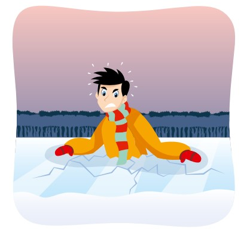

ԿԱՆԽԱՐԳԵԼՈՒՄ

Հիշե՛ք, որ անվտանգության
հիմնական պայմաններն են՝
- լողալու համար ճիշտ վայրի ընտրությունը,
- լողամիջոցներով լողալու և սահելու ժամանակ
կանոնների խիստ պահպանումը:
Արգելվում է`
- բարձրանալ նախազգուշացնող նշանների,
խարսխավոր լողանների և բակենների վրա.
- ջուրը ցատկել նավակներից և մոտորանավակներից, ինչպես
նաև դրա համար չնախատեսված հարմարանքներից.
- Սուզվել կամուրջներից, ամբարտակներից,
նավամատույցներից, ծառերից, բարձր ափերից.
- լողալու համար օգտագործել այնպիսի վտանգավոր միջոցներ, ինչպիսիք
են տախտակներ, գերաններ, անվադողերից պատրաստված օդափուչիկ
(կամերա) և լողալու համար չնախատեսված այլ հարմարանքներ.
- լողալ լողամիջոցներով լողալու համար նախատեսված վայրերում
- օգտագործել ոգելից խմիչք,
- կեղտոտել ջուրն ու ափը, լվալ ներքնազգեստն ու հագուստը
լողալու համար նախատեսված վայրերում,
- մոտ լողալ լողամիջոցներին
- ջրում կոպիտ խաղեր խաղալ՝ կապված ձեռքերն ու
ոտքերը շարժելու սահմանափակման հետ,
- տալ աղետի կեղծ ազդանշաններ,
- լողալ չիմացողներին մտնել գոտկատեղից խոր ջրային տարածքներ:
ՎԱՐՎԵԼԱԿԵՐՊ
Անհետաձգելի բուժօգնություն ջրում՝
- պառկեցրե՛ք տուժածին մեջքի վրա, պինդ մակերևույթի վրա,
- մի ձեռքով բացե՛ք նրա բերանը, մյուս ձեռքի մատներով
անձեռոցիկով կամ թաշկինակով փաթաթած, հանե՛ք
բերանի խոռոչից ավազը, տիղմը և այլն,
- գլխի ետևում դրած ձեռքով առավելագույնս թեքե՛ք ողնաշարը վզի
հատվածում, առաջ քաշե՛ք ստորին ծնոտը կզակից առաջ, պահե՛ք
այդ վիճակում մեկ ձեռքով, երկրորդ ձեռքով փակեք քթանցքները,
- կատարեք արհեստական
շնչառություն և սրտի մերսում։
Սրտի մերսումը և թոքերի արհեստական շնչառությունն
անհրաժեշտ է կատարել մինչև շնչառության, անոթազարկի
վերականգնումը, բիբերի նեղացումը և մաշկի գույնի լավացումը։
Փորձանքի մեջ չընկնելու համար
սառույցի վրա պետք է շատ զգույշ
լինեք։ Առավել վտանգավոր
սառույցն առաջին ու վերջին
սառույցն է։ Այն շատ բարակ է,
ոչ պինդ և չի կարող դիմանալ
նույնիսկ փոքր երեխայի քաշին։
Երկնագույն սառույցը
ամենապինդն է, իսկ
սպիտակը՝ զգալիորեն թույլ է:
Վարվելաձևը սառույցի վրա
- Մեկ անձի համար անվտանգ է
համարվում 7 սմ հաստություն ունեցող
կապույտ գույնի կամ կանաչավուն
երանգ ունեցող սառույցը։
- Մարդկանց խմբի համար
անվտանգ է համարվում 15 սմ
հաստությամբ սառույցը։
- Սառույցի վրա մի քանի անձանց
տեղաշարժի դեպքում անհրաժեշտ
է քայլել միմյանց հետևից՝
պահպանելով տարածություն։
- Մեծ խմբերով չմուշկներով
սահելու դեպքում սառույցը պետք
է ունենա 25 սմ հաստություն։
- Մինչև ջրամբարի սառած մակերեսի
վրա կանգնելը, անհրաժեշտ է իմանալ
սառույցի ծածկի հաստությունը երկար
սուր փայտի (լինգ) կամ նմանատիպ
այլ առարկայի օգնությամբ։
- Ոչ մի դեպքում մի՛ ստուգեք սառույցի
հաստությունը ոտքերի հարվածով։
- Սառույցի վրայով քայլելիս
հետևե՛ք դրա մակերեսը, շրջանցե՛ք
վտանգավոր վայրերը և թփերով
ու խոտերով տարածքները։
Հատկապես պետք է զգույշ լինել
արագ հոսանքների, աղբյուրների,
առուների և ձեռնարկությունների
տաք կեղտաջրերով լի վայրերում։
Եթե սառույցը բավականաչափ
կարծր չէ, ապա անհրաժեշտ է
անհապաղ կանգնել և հետ գնալ նույն
ճանապարհով «մանր» քայլերով
Եթե ընկել եք սառույցի տակ՝

- Խուճապի մի՛ մատնվեք, ձեզ պահեք ջրի
երեսին՝ խուսափելով գլխով սուզվելուց.
- օգնության կանչե՛ք
- փորձե՛ք բարձրանալ սառույցի վրա՝
թևերը լայն բացելով, կրծքավանդակով
սողալով սառույցի եզրին և հերթով
դուրս հանել ոտքերը.
- հնարավորինս արդյունավետ
օգտագործե՛ք ձեր մարմինը, մեծացնելով
հենակետային տարածքը.
- բարձրանալով սառույցի վրա, շրջվե՛ք
և սողալով քաշվե՛ք այն կողմը, որտեղ
սառույցի կարծրությունն արդեն հայտնի է։
Այժմ անհրաժեշտ է հնարավորինս
արագ փոխել հագուստը։
Եթե ձեռքի տակ չկա չոր հագուստ, ապա
անհրաժեշտ է քամել թաց հագուստը
և նորից հագնել այն։ Տաքանալու
համար անհրաժեշտ է կատարել
ցանկացած ֆիզիկական վարժություն։
Կարող եք սրբվել չոր բրդյա
կտորով, որից հետո ծածկվել
քամուց պաշտպանված վայրում, լավ
փաթաթվել, տաք ըմպելիք խմել: